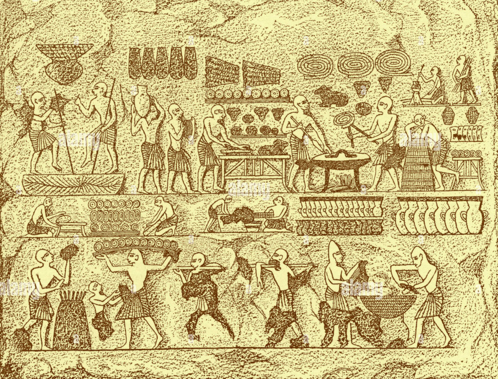

História do Pão

Atualmente, o pão é o alimento mais popular no mundo, sendo produzido em quase todas as sociedades. Entretanto, ele não foi feito sempre da mesma forma e nem teve sempre o mesmo aspecto. Ao longo do tempo, sua produção foi se alterando até chegar ao que nós temos nos dias de hoje.
Há estudos que apontam que os pães começaram a ser produzidos há aproximadamente seis mil anos, na região da Mesopotâmia, onde hoje está situado o Iraque, e foram difundidos por várias civilizações da Antiguidade. Esse pão era resultado de uma mistura seca, dura e amarga feita à base de farinha de trigo. A origem do pão está intimamente ligada ao processo de sedentarização do homem, quando se iniciou o desenvolvimento da agricultura, sendo o trigo um dos cereais resultantes dessa atividade produtiva.

O processo de fermentação foi uma técnica desenvolvida pelos egípcios por volta de 4000 a.C., dando ao pão o aspecto pelo qual o conhecemos hoje em dia. Por ser um produto extremamente necessário à alimentação, ele foi usado durante muitos séculos também como moeda. Há indícios de que os faraós o utilizavam como meio de pagamento para serviços realizados. Em Roma, o pão era um dos componentes da política do panis et circenses (pão e circo), utilizada pelos imperadores para manter uma satisfação aparente da população, desviando a atenção das disputas de poder e das condições de vida a que o povo estava submetido. O trigo era distribuído em espetáculos públicos pela administração do império.
Durante a Idade Média, o pão era feito artesanalmente no ambiente doméstico pelos camponeses. A limitação agrícola e técnica que tinha essa classe social não possibilitava a produção de pães fermentados, o que resultava em um produto de menor qualidade. Situação diferente era a vivenciada pelos senhores feudais, que consumiam pães de maior qualidade produzidos nas padarias dos castelos. Foi também neste período histórico que surgiu a figura do padeiro, que aos poucos passou a se organizar em corporações de ofícios, controlando assim o processo de produção do alimento e gozando de certo prestígio nas cortes.
Com a Revolução Industrial, a produção do pão ganhou um forte impulso, seja no aumento de terras destinadas ao plantio do trigo, seja no desenvolvimento de técnicas de moagem do cereal nos moinhos, passando dos moinhos de tração animal ou humana aos moinhos a vapor, que começaram a surgir em 1784. A grande produção que se verificou se destinava a alimentar principalmente a classe operária que crescia nas cidades industriais, criando condições para uma produção em larga escala.
O pão chegou a ser inclusive um dos motivos de eclosão da Revolução Francesa. Sendo base da alimentação da população francesa há séculos, a severa queda na produção do cereal tornou o alimento caro e escasso. Este foi um dos motivos que levaram à revolta da população francesa e à queda do rei Luís XVI.
Hoje em dia, o pão está disseminado pelo mundo. Sua fabricação envolve vários métodos diferentes, que resultam numa variedade enorme de tipos e qualidades de pães. Apesar desse desenvolvimento, uma boa parcela da população mundial ainda não tem acesso a esse alimento cotidianamente.